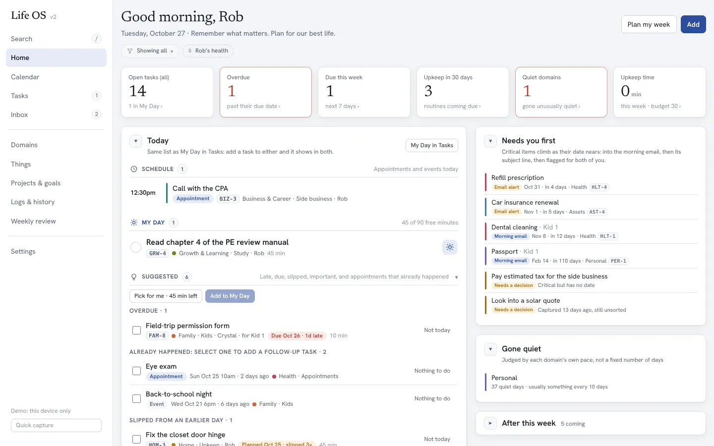
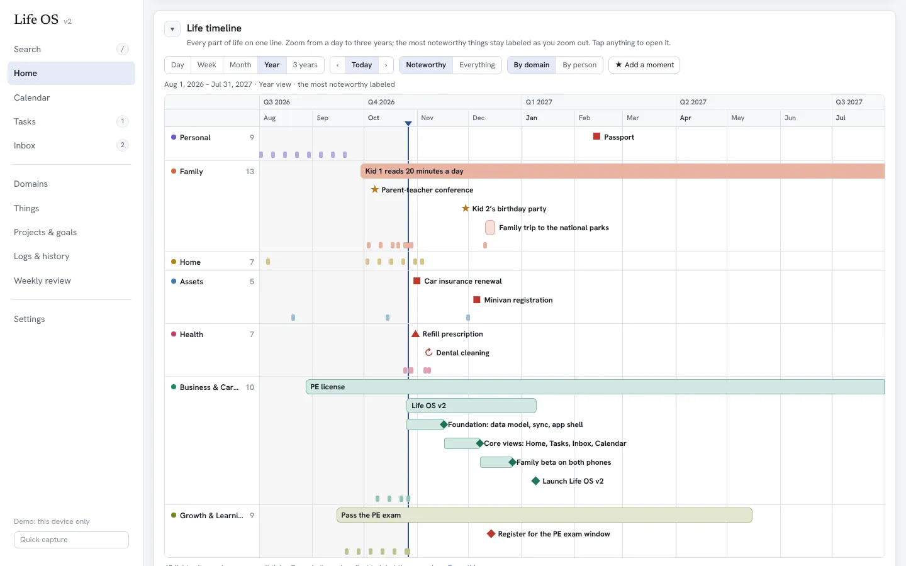
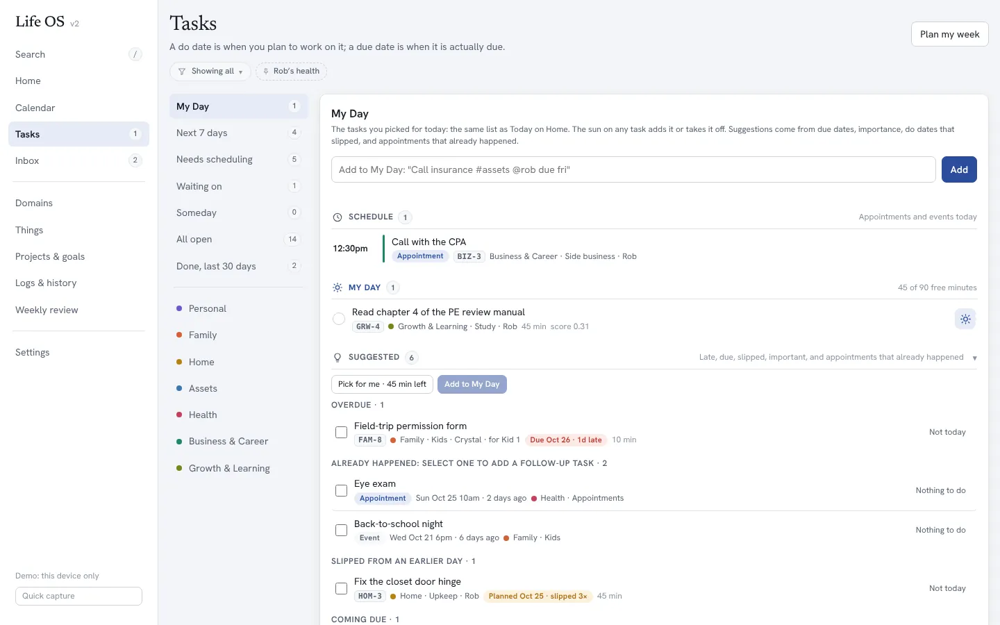
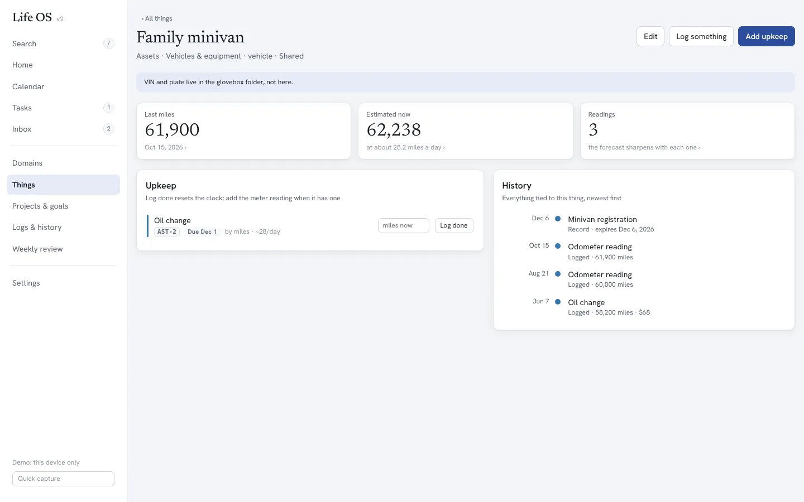
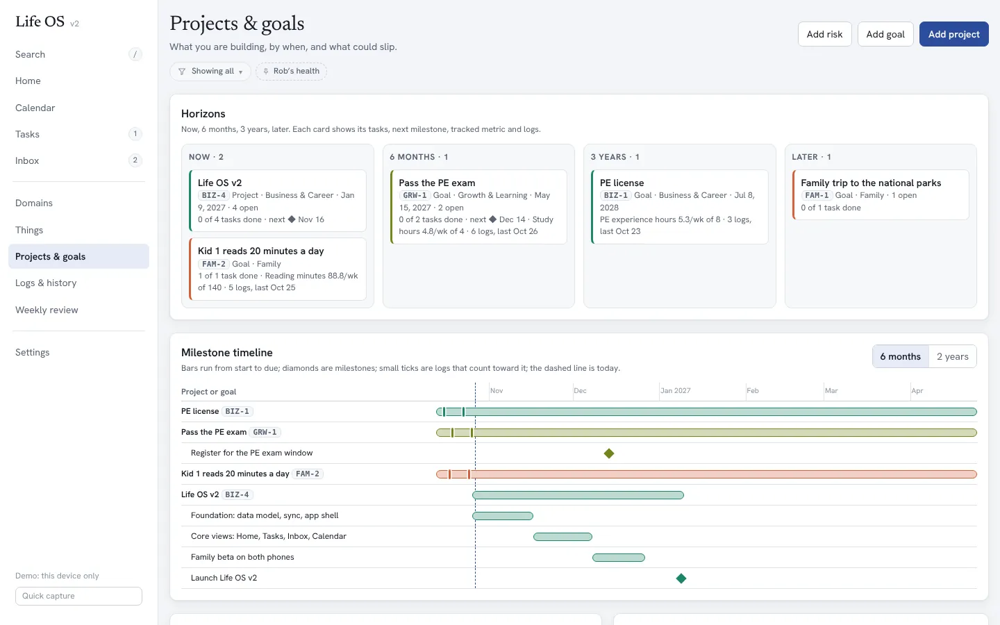
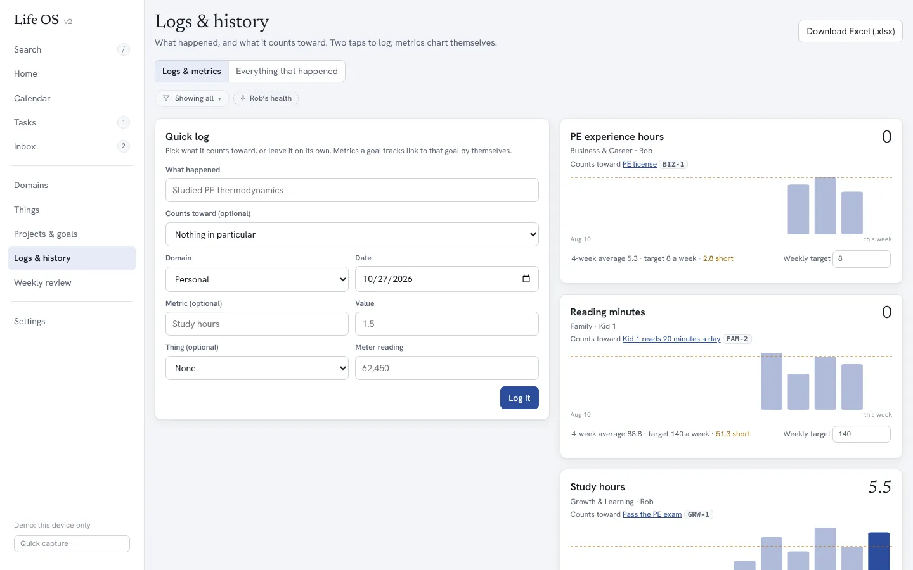
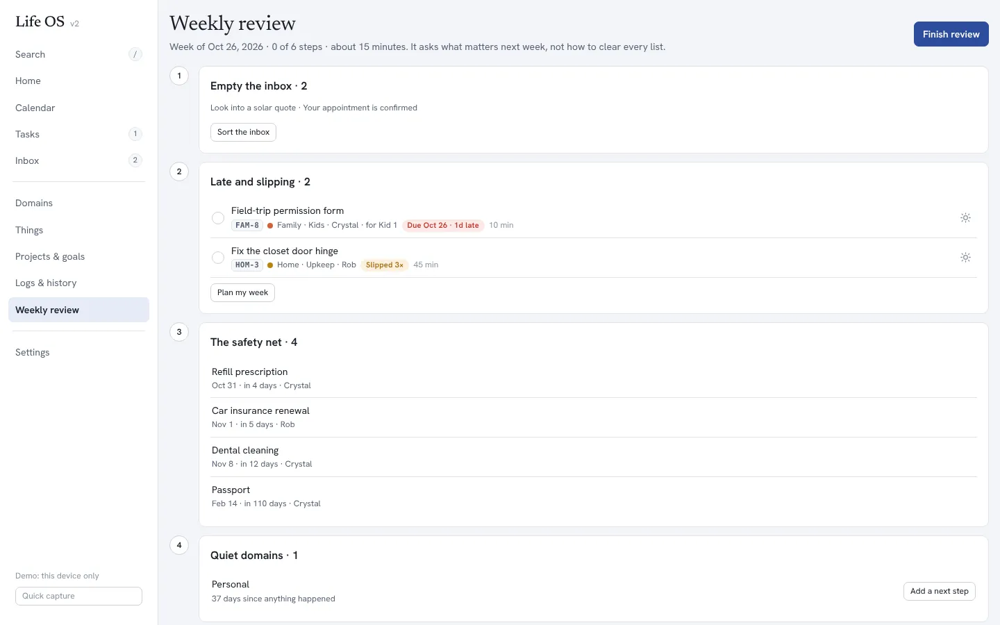

Everything it does, and why
Each part of Life OS exists to help you remember something, plan something, or catch something before it slips. Screens show the made-up sample family.
Home: what needs you today
The first screen answers one question: what should I pay attention to? Today comes first: your appointments, your My Day tasks, upkeep that is due, and suggestions you can accept. The safety net sits beside it, then a planner for the week, then every domain at a glance.
- One filter for every page: a small grey pill under the title says what you are seeing (“Showing all”, or “Rob · Home”) and opens the full filter. Set it on any page and every page follows
- Today on Home and My Day in Tasks are the same list: add a task in one and it is in the other
- Suggestions, like Microsoft To Do’s: overdue, due today, slipped from an earlier day, coming due, important, and appointments that already happened. Tick the ones you want, or press Pick for me to fill the time you have, then add them in one go
- Tap any number at the top (open, overdue, due this week, upkeep, quiet domains) to see exactly the items it counts, and tick them off right there
- Fold any card down to a one-line summary; Home remembers how you like it
- The week planner shows each day’s plans, deadlines, events and upkeep, with how full the day is; drag a task to another day to move its do date
- An attention score ranks My Day and the suggestions by how close the deadline is, priority, whether the do date has come, how often it has slipped, and whether its domain has gone quiet
- “Plan my week” suggests do dates for unscheduled work without moving anything until you accept

A life timeline you can zoom
Every part of life on one line, a lane per domain or per person. Zoom from a single day to three years. The further out you zoom, the more it keeps to what matters: what you starred, what’s critical, milestones, projects and goals. Everything else waits as a small tick until you zoom in.
- Projects and goals are bars from start to due, solid as their tasks get done; milestones, renewals, deadlines, appointments and upkeep are markers
- Tap a heading to zoom in: a year’s month, a month’s week, a week’s day with its hours
- Star anything as Noteworthy to keep it on the timeline at every zoom, and add moments worth keeping, like a first day of school
- Every bar and marker opens the item; a lane opens its domain

A calendar of your whole life
Do dates, deadlines, events, routines, renewals, milestones and logs share one calendar in day, week, month or year view.
- Tap the filter pill, then a domain, a person or a kind of entry to hide it; double-tap to show only that one
- Save filters as views, like “Family week” or “House and car upkeep”
- Drag a task to another day to move its do date; the due date stays put
- Download everything as a calendar file for Google, Apple or Outlook calendars

Tasks with two kinds of date
A do date is when you plan to work on something. A due date is when it has to be done. Life OS keeps them apart, because mixing them is how deadlines get missed.
- The sun on any task adds it to My Day (its do date becomes today) or takes it off
- A missed do date rolls back into “Needs scheduling”, comes back the next day as a suggestion, and counts the slip; the due date never moves on its own
- Lists: My Day, Next 7 days, Needs scheduling, Waiting, Someday, and one per domain
- Quick add understands dates, times, #domains, @people, !priority and “every 3 months”

Things and their upkeep
Cars, the house, computers, the photo library. Each thing keeps its own history, and its routines come due by time, by meter, or by whichever comes first.
- Log the odometer now and then; Life OS learns your miles per day and forecasts the next oil change
- “Log done” records the date and reading and starts the clock again
- Registrations, warranties and insurance renewals sit with the thing they belong to

Projects, goals and milestones
Big things on a timeline. Projects hold their tasks; goals sit on a horizon of now, six months, three years or later; milestones mark the dates that matter.
- Each card shows tasks done, the next milestone, its tracked metric against target, and its logs
- Logs that count toward a project show as small ticks on its timeline bar
- Filter to a domain and projects elsewhere that have tasks or logs in it still show, marked “Connected”
- Risks with likelihood and impact, so the worrying ones are on top

Logs and metrics
Two taps to record what happened, and what it counts toward. A log can count toward a project or goal, or belong to a routine or thing as its upkeep history. Give it a metric, like study hours, and it charts itself by week against your target.
- A goal that tracks a metric collects every log with that metric by itself
- The domain and people filter applies here too: filter to Family and you see only Family logs and charts
- Logs count as activity, which keeps the quiet-domain check honest; meter readings feed upkeep forecasts

The weekly review, in fifteen minutes
Six steps that ask what matters next week: empty the inbox, look at what’s late, check the safety net, wake a quiet domain, glance at upkeep, and pick up to three domains to focus on.

And the parts you don’t see
Domains, areas and IDs you control
Rename, recolor, reorder, add or delete domains, and the areas inside them, like Kids or Vehicles. Tap an area to narrow a domain to it. Every task, project, routine and record gets an ID from its domain’s code, like HOM-12, that survives moves between areas.
Google Calendar and Tasks
Each adult can connect their own Google. Appointments, critical dates with reminders at their lead time, upkeep and tasks go to a Life OS calendar and task list there; moved times, ticked tasks and new events come back. Every one links to its item in Life OS.
Start with the basics
A few questions (cars, own or rent, kids, pets) and Life OS adds the renewals, upkeep and checkups most families lose track of, each with a lead time. Then it asks for the dates you know. Run it again after a new car or a move: it only adds what’s new.
Email to Life OS
A private address for your household. The subject line decides what each email becomes, and calendar invites become events that follow their updates and cancellations.
The morning email
Each morning, every adult in the household gets one short email: critical items, My Day, what’s overdue, upkeep and renewals coming up. Turn it off in Settings.
Offline first
Everything is saved on your device first and syncs in the background, so it’s fast and works without a signal. Two people editing the same item offline merge field by field.
Private items
Mark an item private when you create it and only you will see it, even inside a shared household. Good for a surprise.
Everything that happened, and an Excel file of it
Logs & history also lists everything that happened, gathered from what you already added: tasks completed, events, upkeep, renewals. Download it all as an Excel workbook, one sheet per kind, following your filter. Full backups and calendar files too, on any plan.